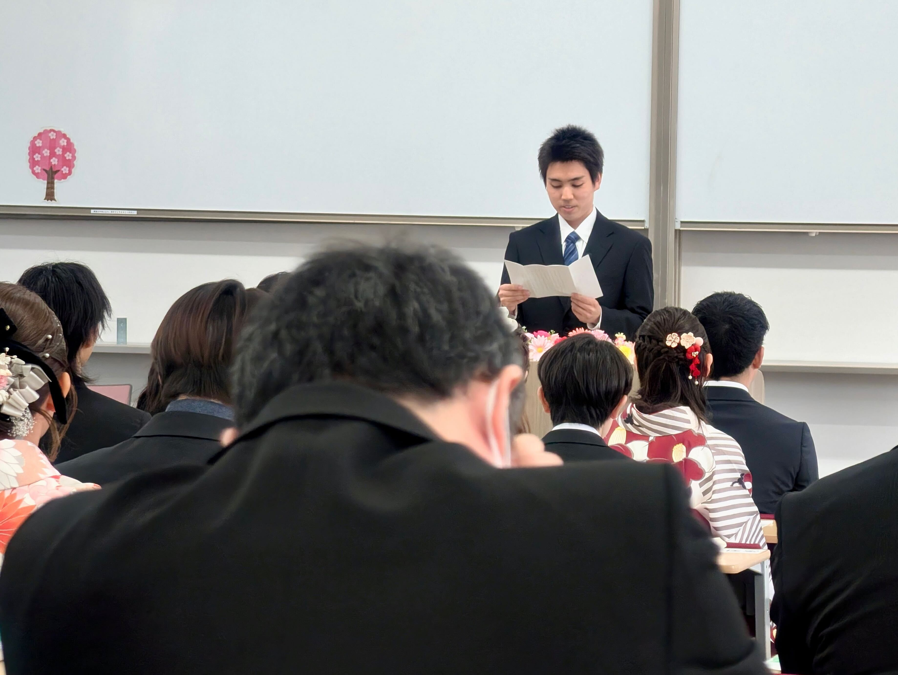
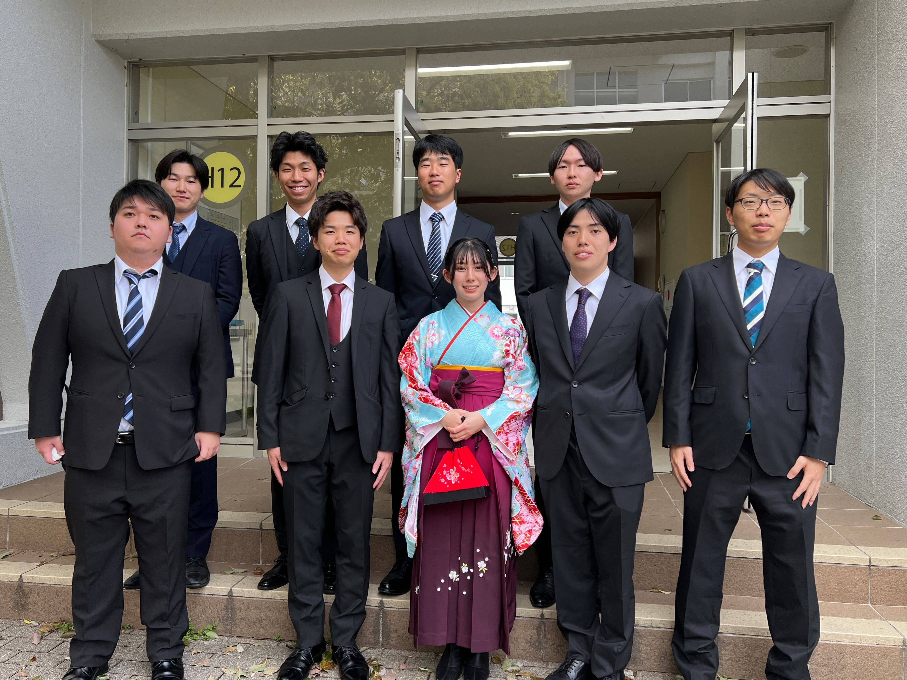

mizukan
卒業式
2026年3月24日（火）愛媛大学の卒業式が執り行われました。
当研究室からも、修士課程を修了されたM2の先輩方、
そして学部を卒業された4回生の皆さんが、
晴れやかな表情で門出の日を迎えられました。

修了生代表として答辞を読む奥山先輩(奥)と森脇先生(手前)
研究室での日々は、楽しいことばかりではなく、
実験や解析が思うように進まず苦労したこともあったかと思います。
しかし、それらを乗り越えて学位記を手にされた皆さんの姿は、
私たちにとっても大きな目標となりました。

卒業生・修了生の皆さん、本当におめでとうございます！
文責 前田